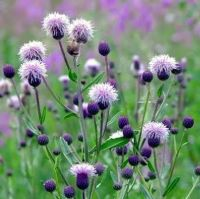
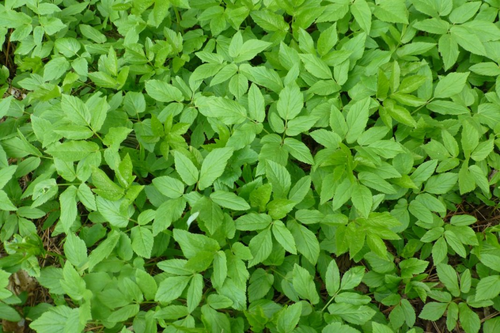
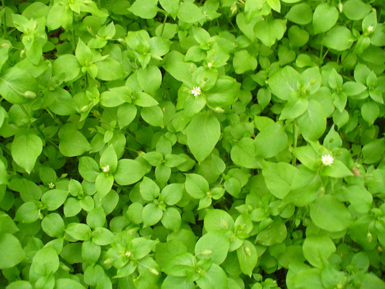
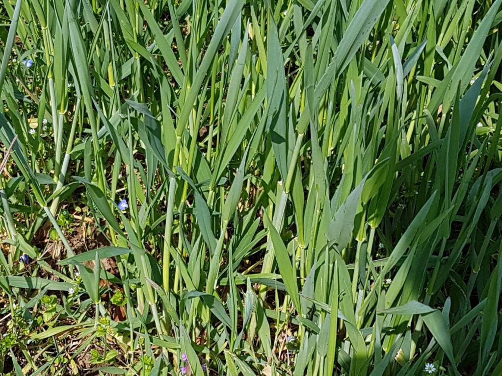

Осот.
Пожалуй, самое противное для прополки растение. Мешают и колючий стебель, и мощный корень длиной до 18sm.
А если опоздать с прополкой, то семена-летучки за один сезон засеют весь участок!
Обычная прополка требует силы (вытягивать корень из земли), садовых перчаток и педантичности – ведь если вы оставите в земле хотя бы пятисантиметровый кусочек корня, сорняк быстро отрастёт по новой.
На не слишком бросающихся в глаза участках дачи можно не полоть, а методично косить сорняк, это истощит его.
Замульчируйте почву – опилками, соломой, плёнкой. Междурядья и пространство под деревьями можно застелить специальным материалом – агроспаном (это чёрная ткань, препятствующая появлению сорняков).
Истребить осот помогут «Раундап» или «Лотрел». Правда, применять их стоит только на газонах, вдоль забора и дорожек. Не допускайте попадания химикатов на листья и побеги культурных растений!

Сныть.
Настоящее бедствие для сада. С помощью длинных живучих корней быстро размножается и осваивает всё новые и новые площади. Прополка бесполезна – растение пронизывает корнями 40-сантиметровый слой почвы! И даёт
ростки из малейшего кусочка корня.
Поможет полная перекопка мощного слоя почвы, каждый корень надо выбрать. Распространение сныти можно сдерживать, вкопав в землю пластиковую садовую ленту на глубину не менее 20 см.
А чтобы растение не размножалось самопосевом, нужно косить траву и обрывать цветоносы.
Рекомендуется до весны будущего года укрыть чёрной плёнкой, картоном или агроспаном сильно заражённые участки. Без солнечного света большинство растений погибнет. Второй способ – посадить картофель: сныть не выносит окучивания.
Против сныти рекомендуют препараты «Раундап», «Киллер», «Торнадо». Только обрабатывать живучий сорняк придётся несколько раз за сезон. Проводить «химическую атаку» лучше ясным безветренным днём. Остерегайтесь попадания препаратов на листья и побеги декоративных
и съедобных растений.

Мокрица.
Сорняк-индикатор, который показывает, что почва на вашем участке слишком кислая, да и солнца на участке маловато. Благодаря живучести сорняка бороться с ним приходится всё лето, мокрица постоянно цветёт и
способна сменить несколько поколений за сезон.
Выпалывать эту незваную гостью очень сложно. Даже маленький листочек или кусочек стебля, оставшиеся в земле, способны очень быстро дать новое растение. Нежный стебель рвётся при прополке и ещё лучше
укореняется, а через несколько недель появляются новые всходы. Ссекайте сорняк тяпкой или плоскорезом, как только заметите. Главное – не допускать цветения!
Проще всего создать сорняку невыносимые условия: осенью при перекопке внести в почву известь или мел, золу. Золу можно применять в любое время. Такой способ значительно снизит кислотность, и мокрица уйдёт с участка сама собой.
Легко и полностью уничтожает мокрицу «Раундап». Используя химикат, точно следуйте инструкции и соблюдайте безопасную дозировку и правила обработки. Учтите – «химию» нельзя применять на грядках и в плодовом саду, разве только осенью в перекопку.

Пырей ползуйчий.
Невероятно упорное растение, выживает в любых условиях. А причиной всему корни, проникающие на глубину до 1 м. Одно растение способно дать 104 семян, которые прорастают уже через две недели.
Пырей заманивает в огород вредных насекомых – проволочника, гессенскую муху и стеблевую совку.
Лучший способ уничтожения сорняка – это перекопать участок вилами на очень большую глубину (до 30 см) и тщательно при этом выбирать руками корни. Даже маленький отросток может засорить весь огород.
Выполотые растения вынесите за территорию и сожгите.
Очень хорошо подавляет пырей газонная трава. Сильно заражённые участки рекомендуют занять под газон или просто засеять клевером. Может помочь и мульчирование – опилками, соломой, агроперлитом (оставляя крестообразные прорези для полезных культур).
В ясную погоду опрыскиваем сорняки «Раундапом». Когда растения пожелтеют (через 7-10 дней), перекапываем почву и удаляем корни. На газоне, где сорняков немного, препарат можно наносить кисточкой. Остерегайтесь попадания «химии» на листья и побеги культурных
растений.
|
|
|
ШОК!!! Доктор Попов поделился своими иточниками силы земли прямо с грядки...
Смотреть
|
|
|
Хочешь выращивать такие же огромные фрукты?? Надо всего лишь каждый день на ночь добавлять...
Смотреть
|
|
|
Украинский мужик-чипполино снова принялся за свое!! А кот от него не отстает)) Ананас, арбуз, маракуйя и...
Смотреть
|
|